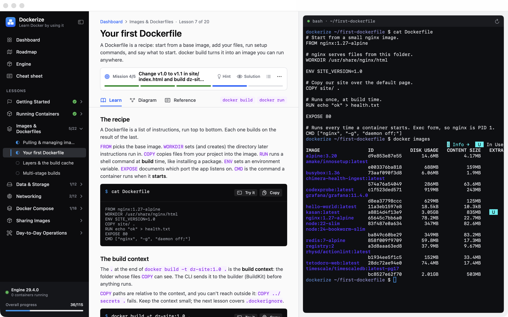
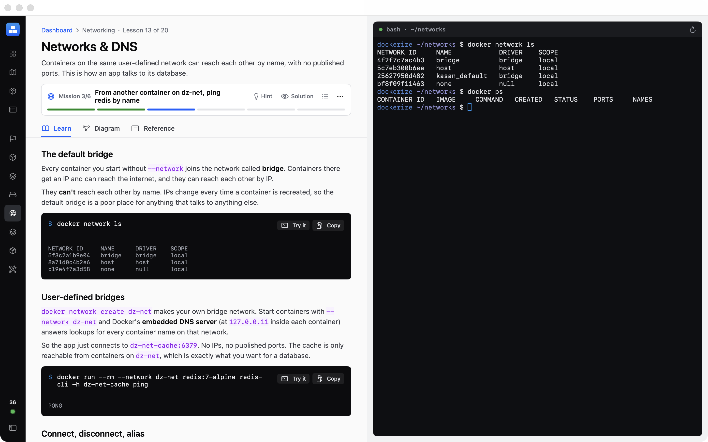
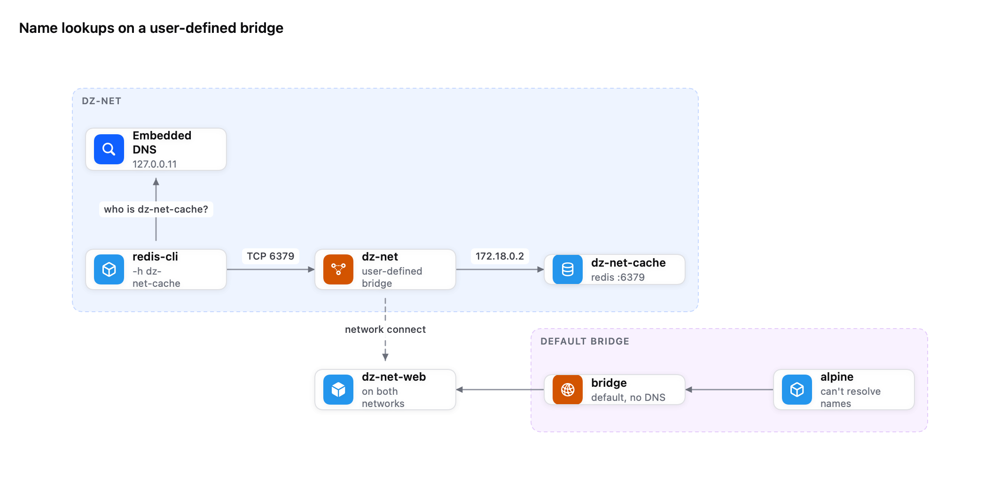
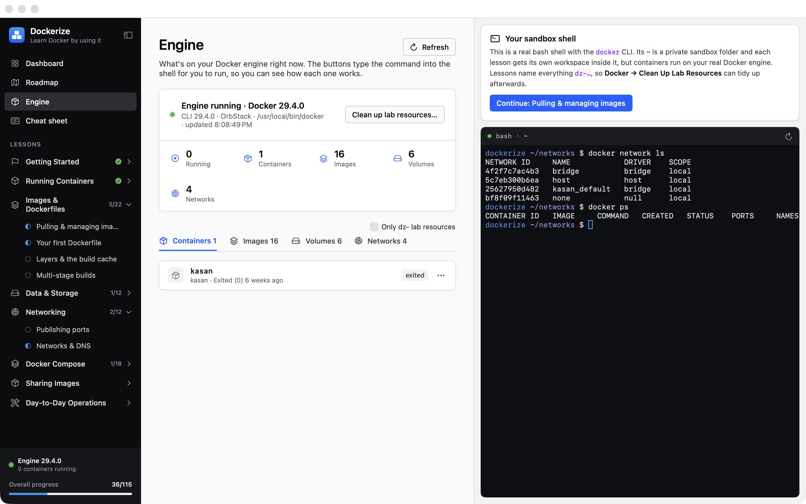
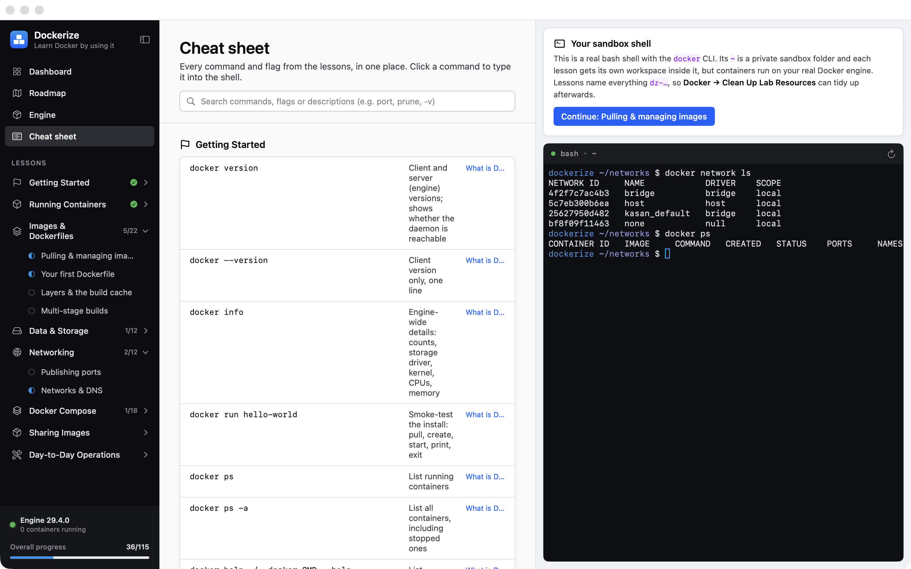
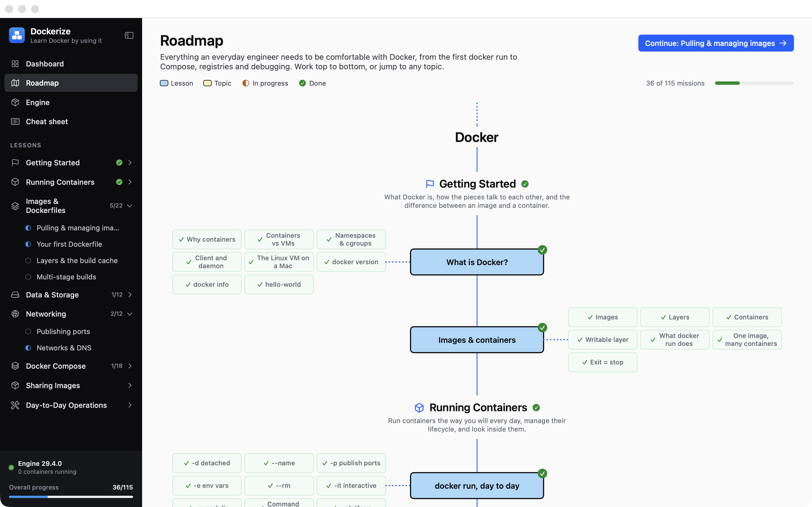
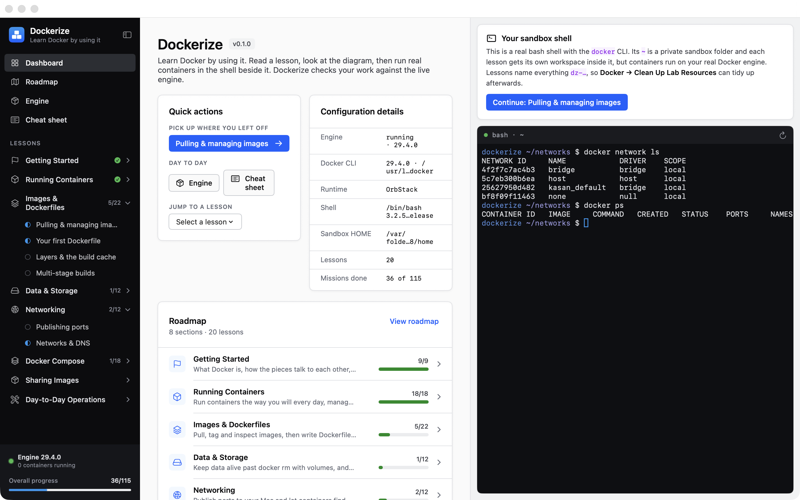

Learn Docker by using it.
Dockerize is a Mac app with a real shell and the docker CLI built in. Read a short lesson, then run real containers in the terminal right beside it. Dockerize checks your work against the live Docker engine.
Universal app for Apple silicon and Intel · macOS 14 Sonoma or later · Works with OrbStack, Docker Desktop or Colima

Read a little, run a lot.
Every lesson follows the same loop, so you spend your time running containers instead of reading about them.
Read the lesson
Short explanations with real examples and a diagram of what's going on. Hit Try it on any example and Dockerize types it into the shell for you.
Run it yourself
The shell next to the lesson is real bash with the real docker CLI. Each lesson gets its own folder with Dockerfiles, app code and compose.yaml files ready to go.
Clear the missions
Dockerize asks the engine what's actually there: is dz-web running, does it publish 8080, is it on dz-net. Hints and solutions are there if you're stuck.
Everything you need, nothing in the way.
Checked against the engine, not your typing.
The mission bar shows the one task you're on, with a progress bar for the lesson. There's no quiz and no string matching. You pass when the container, image, volume or network really exists the way the mission asks.
- Any command that gets the result counts, typos and all
- Hints and full solutions stay hidden until you ask for them
- Collapse the sidebar for a focused, two-pane view
- Progress is saved, so you can pick up where you left off

See what's happening under the hood.
Every lesson has a Diagram tab that shows the mechanism behind the commands: how the client talks to the daemon, how layers stack up, how containers find each other by name on a network.
- 20 diagrams, one per lesson
- A Reference tab with the flags you'll actually use
- Mac notes on what's different when Docker runs in a Linux VM

Your whole engine on one page.
The Engine page lists your containers, images, volumes and networks live, so you can watch them appear as you work. Actions like stop, remove or inspect type the matching command into the shell, so you learn the command as you click.
- Updates on its own, or press ⌘ R to refresh
- Lab resources named dz-… are easy to spot
- Engine down? Start OrbStack, Docker Desktop or Rancher Desktop from here

Every command, one search away.
The cheat sheet collects every command and flag from every lesson in one searchable list. Forgot how to bind a port to localhost or prune build cache? Type a word and it's there.

A clear path from first container to Compose.
The roadmap lays out every lesson and topic in order, with what you've finished marked off. Work top to bottom, or jump to whatever you need today.

Always know what's next.
The dashboard shows your progress through each topic and the state of your engine, and takes you straight back into the lesson you were working on.

Built for practice.
A real shell, a real engine
Not a simulator. It's /bin/bash and the docker CLI talking to your own engine, using your normal Docker config and context.
Its own home folder
The shell's $HOME is a sandbox with one workspace per lesson, so your own files stay out of the way. Reset a lesson to get its starting files back.
Try it buttons
Examples type themselves into the prompt without pressing Return, so you can read and tweak them first.
Ready in one click
Each lesson offers to pull the images it needs. If the engine is off, Start Docker opens OrbStack, Docker Desktop or Rancher Desktop, or types colima start for you.
Cleans up after itself
Everything the lessons create is named dz-…. Docker → Clean Up Lab Resources removes only those and leaves the rest of your engine alone.
Keyboard friendly
⌘ 1–4 jump to Dashboard, Roadmap, Engine and Cheat sheet. ⌘ [ and ⌘ ] move between lessons, and ⌘ \ hides the sidebar.
The Docker every engineer uses.
Eight topics, ordered so each one builds on the last, from your first docker run to Compose, registries and debugging.
Getting Started
What Docker is, how the pieces talk to each other, and the difference between an image and a container.
Running Containers
Run containers the way you will every day, manage their lifecycle, and look inside them.
Images & Dockerfiles
Pull, tag and inspect images, then write Dockerfiles that build fast and ship small.
Data & Storage
Keep data alive past docker rm with volumes, and edit code live with bind mounts.
Networking
Publish ports to your Mac and let containers find each other by name.
Docker Compose
Describe a whole app in one compose.yaml and run it with one command.
Sharing Images
Tag, push and pull images through a registry, or carry them as a tar file.
Day-to-Day Operations
Reclaim disk space, debug crashing containers, and set limits and restart policies.
Up and running in a minute.
Dockerize comes as a standard Mac disk image (DMG). You'll also need a Docker runtime.
-
Install a Docker runtime
Already have one? Skip ahead. Otherwise install OrbStack (brew install --cask orbstack), Docker Desktop or Colima. Dockerize finds the docker CLI on its own.
-
Download the DMG
Get Dockerize.dmg from the latest GitHub release. It's one universal download for Apple silicon and Intel Macs.
-
Open it and drag Dockerize to Applications
Double-click Dockerize.dmg in your Downloads folder. In the window that opens, drag the Dockerize icon onto the Applications folder.
-
Eject the disk image
In Finder's sidebar, click the eject button next to Dockerize. You can then delete the DMG.
-
Open Dockerize
Launch it from Applications, Launchpad or Spotlight (⌘ Space, then type “Dockerize”). The first launch needs one extra step; see below.
If macOS says Dockerize can't be opened. Dockerize is free and isn't notarized by Apple, so the first launch is blocked by Gatekeeper. To allow it:
macOS 15 Sequoia and later: open Dockerize once and click Done. Then go to System Settings → Privacy & Security, scroll down to the message about Dockerize, click Open Anyway, and confirm with your password.
macOS 14 Sonoma: in Applications, Control-click Dockerize, choose Open, then click Open again.
You only need to do this once.
Requirements
- macOS14 Sonoma or later
- MacApple silicon or Intel
- DockerOrbStack, Docker Desktop or Colima
Prefer the Terminal?
Clear the quarantine flag after copying the app to Applications:
xattr -dr com.apple.quarantine /Applications/Dockerize.appBuild from source
Needs Xcode 15.3 or later, or the Swift 5.10 toolchain.
git clone https://github.com/mmerioles/dockerize.git
cd dockerize
swift runTo make your own DMG, run scripts/build-dmg.sh.
Uninstall
First choose Docker → Clean Up Lab Resources in Dockerize to remove the dz-… containers, images, volumes and networks the lessons made. Then drag Dockerize from Applications to the Trash. To also remove your practice files and progress:
rm -rf ~/Library/Application\ Support/Dockerize
defaults delete io.github.mmerioles.dockerizeYour Docker runtime and everything else on your engine stay as they were.
Open a shell and run your first container.
Free, open source, and ready in a minute.